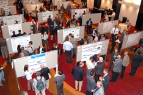
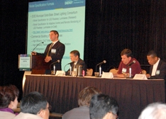
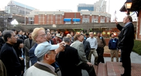
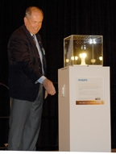
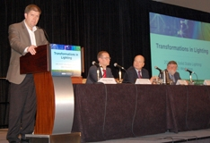
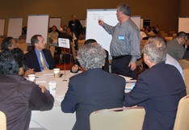
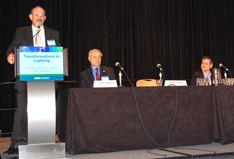

Nearly 300 researchers, manufacturers, and other industry insiders and observers gathered in Atlanta January 31–February 2, 2012, to participate in DOE's "Transformations in Lighting" Solid-State Lighting (SSL) R&D Workshop.
DOE SSL Portfolio Manager James Brodrick kicked off Day 1 by observing that although LED lighting has made a great deal of progress, the technology still has plenty of headroom, and that settling for current performance levels will leave considerable energy savings still on the table. He noted that efficacy is starting to level off using today's techniques, and cited the need for breakthroughs rather than incremental improvements. Brodrick observed that manufacturers are starting to think outside the box—not just in terms of new form factors, but also about the way light is delivered and how it can be tailored to specific applications.
Josh Baribeau of Canaccord Genuity stressed the need to look beyond myopic solutions, so that the lighting market can be truly revolutionized, rather than merely penetrated, by LEDs. He observed that networking our lighting can lead to greater insight into our energy consumption patterns and help us optimize the generation and distribution of electricity. Noting that SSL has the potential to be 75 percent more efficient than other lighting technologies and can reduce worldwide electricity consumption by 12 percent, Baribeau called it the "hidden gem" of the cleantech/sustainability movement. He forecast an adoption rate of between 55–83 percent for LED replacement bulbs by 2020, but called them a "bridge solution" to products that make better use of SSL technology.
Fred Maxik of Lighting Science Group said that our understanding of light is changing dramatically, and predicted that in 10 years "We'll use it in ways we aren't even thinking about today." He conjured up images of lights eventually comprising a complex network of communication—where, for example, road lights brighten when they detect the approach of a fire engine, and interior lights react similarly when their exterior counterparts detect someone entering the building. Noting that the industry as a whole is in the process of making a transition from analog to digital forms, he stressed the need to rethink applications and reset what's "normal" in lighting. "Our industry has grown by some billions of dollars, but we're still in our infancy," he said.
Lessons from the Field

A diverse panel of speakers, moderated by Bruce Kinzey of Pacific Northwest National Laboratory (PNNL), discussed lessons learned from recent real-world LED lighting installations and testing of SSL products. The panel began with Michael Poplawski of PNNL, who shared insights on LED lighting products gained from CALiPER testing, GATEWAY demonstrations, and Municipal Solid-State Street Lighting Consortium activities. Focusing on flicker, dimmability, power quality, and driver reliability, he emphasized the importance of knowing what end users expect in terms of product performance, and stated that likely performance variations need to be clearly communicated. Poplawski noted that as SSL market penetration increases, the technology is becoming more exposed to the vagaries of building infrastructure that was created for other lighting technologies, and that products with more compatibility and interoperability are likely to have greater success. "We're still pushing the boundaries of what this technology can achieve," he said.
Noting that every customer's electrical environment is different, Philip Keebler of the Electric Power Research Institute (EPRI) focused on the importance of power quality and system compatibility to solid-state lighting. He observed that manufacturers of electronic linear ballasts and compact fluorescent lamps as well as utilities suffered financial losses because of low product immunity to electrical disturbances, and he emphasized that compatibility is critical to the sustainability of any electronic product, adding that EPRI is developing compatibility curves for LED lighting. Keebler reviewed some of the varied problems that have occurred in LEDs as a result of electrical disturbances, and stressed the importance of testing as a critical part of product design.
Edward Smalley of Seattle City Light said that to date, 20,000 of Seattle's 84,000 streetlights have been converted to LED, and that the resulting energy savings of more than 48 percent have exceeded the initial goal of 40 percent. He projected that the switch to LED streetlights will result in a cumulative savings of nearly $1.9 million at the end of 2014. Smalley discussed his methodology for selecting LED fixtures, which includes community surveys, photometric analysis, and field demonstrations and evaluations. He discussed Seattle's plans to test remote monitoring and adaptive controls. "LED street lighting has proven to be a significantly better light source in terms of expected maintenance, energy efficiency, and quality of light," Smalley said.

Day 1 concluded with an optional walking tour of LED lighting installations in Atlanta, led by Carl Watkins of the Georgia Building Authority. In the Georgia Railroad Freight Depot, an historic building now used as a banquet facility, 48 T8 fluorescent lamps were replaced with 2'x4' LED troffers that each deliver 4,000 lumens on 44W. In addition, 55 downlights have been replaced with 12W LED can fixtures, and the facility also includes 158 LED PAR-38 18W flood lamps and 32 LED A19 exterior fixtures. All fixtures were color-corrected for natural light and are dimmable. Right outside the building is Steve Polk Plaza, which features 55W LED lamps in cluster-light fixtures.
L Prize Winner

Brodrick gave an update on the L Prize ® competition, noting that in August 2011 an entry from Philips Lighting was announced as the winner in the 60W replacement category. He reviewed what sets that winning product apart from other lamps, such as the fact that it produces more than 900 lumens, consumes less than 10W, and has a lifetime of greater than 25,000 hours—all of which were verified by extensive testing. Brodrick also discussed the L Prize competition's impact on the market as a whole, observing that the Philips entry helped catalyze market competition, resulting in a steady improvement in the performance of LED replacement bulbs. He said the market availability of the winning product will help raise expectations about LED lighting performance in general. Keith Cook of Philips spoke about developing the L Prize winner, which he demonstrated for the attendees.
Managing the Light
Tom Simpson of 3M talked about the migration of light-management technology, from liquid crystal displays to general illumination, and its ramifications for SSL. He noted that the display industry has acted as an incubator for LEDs, which will be the dominant form of backlight by the end of 2012. Simpson observed that the resulting improvements that have been made in LEDs in terms of color and efficiency have enabled them to move into the general-illumination field. The remaining challenges, he said, involve the management of heat and light. Simpson discussed convection and radiation, noting that the aesthetics of a surface can affect its thermal performance. He also talked about the injection, transport, and extraction of light, focusing on the use of light guides, and considered projections for OLED penetration of the display and lighting markets.
DOE-Funded R&D Update
 with R&D achievement award representatives (from left) Christian Wetzel (RPI), Eric Teather (WhiteOptics), Monica Hansen (Cree), Anand Upadhyay (Philips), Camil-Daniel Ghiu (OSRAM Sylvania), and Mike Hack (UDC).")
Brodrick began the next session with an overview of DOE SSL R&D portfolio funding and areas of focus. He gave special recognition to six project teams that made significant contributions in 2011: Cree Inc., OSRAM Sylvania, Philips Lighting, Rensselaer Polytechnic Institute, Universal Display Corporation, and WhiteOptics.
Next, DOE highlighted five R&D projects that are tackling particularly tough challenges with the potential for game-changing results:
- Mike Weaver discussed how Universal Display Corporation is working with Acuity Brands Lighting to make an efficient, color-tunable luminaire for use in the commercial sector using phosphorescent OLED technology.
- Ian Parker described DuPont Displays' research to determine whether solution-processed, printed OLED panels are feasible for lighting applications.
- Camil-Daniel Ghiu offered an overview of OSRAM Sylvania's efforts to develop a high-efficiency LED 2'x2' troffer replacement.
- Anand Upadhyay presented Philips Lighting's research to make an LED driver that's more efficient, smaller in size, and lower in cost than currently available drivers.
- Aurelien David discussed how Soraa Inc. is working to improve efficiency droop by growing GaN on an M-plane GaN substrate instead of on C-plane sapphire or silicon.
Proposal Guidance
Joel Chaddock of National Energy Technology Laboratory reviewed the DOE selection process for funding SSL R&D projects and provided guidance on how to put together a comprehensive proposal for DOE funding. He outlined the process of solicitation development, described how proposals are evaluated, and led the audience step by step through the submission process. Chaddock advised that applicants clearly describe the proposed research and goals, provide realistic milestones, and thoroughly address all aspects of the evaluation criteria. He also went over several recent changes to the DOE solicitation schedule.
Basic Science Issues

Panel 2, which was moderated by Morgan Pattison of SSLS Inc., considered fundamental science challenges that still need to be addressed before solid-state lighting can achieve its full potential. Sebastian Reineke of Massachusetts Institute of Technology (MIT) focused on the issue of light extraction in OLEDs. Noting that standard OLED architecture without outcoupling enhancement loses about 80 percent of the light produced, which severely limits the efficacy, he described how MIT is trying to improve that by working with all four pathways of light loss: metal, emission layer, substrate, and air. This approach, Reineke said, has improved light extraction in the laboratory by a factor of three, from 20 percent to about 60 percent. He thinks this can be improved even further but cited the need to make the procedure scalable and cost-effective for commercial use.
Dan Dapkus of the University of Southern California discussed the use of nanotechnology to improve the efficiency of LEDs. He explained that growing quantum wells on nanostructures instead of on a flat layer increases the available surface area and thus results in more emitting region per chip, which should improve efficiency at high currents. Dapkus noted that GaN nanorods and nanosheets produce non-polar facets on which to grow LED active regions, and that the creation of non-polar planes on conventional orientation substrates accesses the advantages of non-polar orientations without the cost of bulk substrates. He said that the fact that the active regions are 3-D may reduce efficiency droop even further, and added that nanostructures can be grown on silicon or other low-cost substrates to reduce the cost even more.
Robert Biefeld of Sandia National Laboratories discussed the need to gain a better understanding of the basic science underlying the droop phenomenon in order to address it more effectively. He emphasized that the historical approach to analyzing and describing droop, using a macroscopic "ABC" approximation, is not adequate, and that a more detailed understanding of the physical processes involved is needed in order to solve the problem. Biefeld said that variations in radiative recombination with carrier density are predicted by a more detailed microscopic model, in which carriers aren't identical but are distributed.
Participants Provide Input on DOE R&D Priorities
Fred Welsh of Radcliffe Advisors previewed the proposed updates to the DOE SSL R&D Multi-Year Program Plan (MYPP), including feedback from the Fall 2011 roundtable discussions on R&D priorities. He noted that the likely MYPP emphasis for 2012 includes looking for real breakthroughs in efficiency, emphasizing purpose-built luminaires over replacement lamps, and focusing on appropriate light distribution, color quality, lifetime, and intelligence in addition to efficacy.
On Wednesday and Thursday, workshop participants divided into separate LED and OLED track sessions to explore the proposed priority tasks from DOE's updated SSL R&D MYPP. The input from these track sessions will be used to update the MYPP and guide DOE planning for R&D solicitations.

Wednesday's LED track session explored issues associated with substrates, down converters, alternative device architecture, and luminaires. Wednesday's OLED track session addressed the status and critical issues of light extraction, materials, and luminaire integration. For Thursday's track sessions, attendees split up into small groups that each explored a single topic in greater detail, then shared key points among all the groups, and finally discussed how the input related to the proposed priority tasks from the updated MYPP.
Day 2 ended with an evening poster session and reception sponsored by the Next Generation Lighting Industry Alliance that featured more than 40 DOE-funded SSL R&D projects and provided attendees with additional opportunities for discussion, information exchange, and potential partnering. The 2012 Project Portfolio provides more on each of the current DOE SSL projects.
A Lighting Designer's Wish List
Day 3 began with Barbara Horton of Horton Lees Brogden Lighting Design giving a lighting designer's front-line perspective on what she'd like to see in SSL products. She underscored the desirability of dynamic color dimming to replicate the color shift of incandescent lamps, and the need for color metrics that are meaningful to LED applications. Horton said she'd like to see LED lighting products that dim smoothly and clicklessly to the "off" state and that incorporate built-in intelligence, as well as better LED directional sources and tubular LED lamps that can compete with fluorescents. In addition, she cited the need for standardized reporting criteria, and said she'd like to see such LED products as parking garage luminaires with uplight, roadway luminaires with glare control, and floodlights that can compete with ceramic metal halide T9 technology.
Whither SSL?

The workshop concluded with a panel, moderated by Brodrick, that took a look ahead to consider where the SSL revolution is headed, what applications best support the technology's value proposition, and how it will soon be guided less by "technology's push" than by "application's pull." Kevin Leadford of Acuity Brands Lighting noted that SSL has already begun moving away from what he called "vacuum tube mimicry," which constrains many of today's LED lighting products by patterning them after traditional technologies rather than creatively playing to their inherent strengths. Reminding the audience that lighting is for people rather than something of value in and of itself, he advocated an overall rethinking of many SSL aspects we currently take for granted, and predicted a trend toward products that are tailored to specific applications.
Brian Chemel of Digital Lumens emphasized the role intelligent lighting systems will play in the SSL revolution, with LEDs, sensors, and networking all working together to reduce energy by cutting down on wasted lumens, and with the intelligence concentrated in the fixture itself rather than in a centralized controller. This increased intelligence, he said, will help make lighting more dynamic, with light levels tailored to task requirements, and user preferences and usage patterns discerned automatically from historical data. Chemel said he sees these kinds of lighting control systems eventually acting like "Trojan horses" that bring the same degree of energy management to other building sectors.
Emphasizing that the success of solid-state lighting depends on more than just one-dimensional parameters such as energy savings and price, Steve Paolini of Lunera Lighting focused on the spectrum tunability of LEDs. He made the point that the common combination of red, green, and blue does not produce white light of a sufficiently high quality, and that combining five LED colors instead is a preferable alternative. Paolini noted that good results are already being obtained by under-driving five-color LED combinations. He observed that the chromaticity of daylight changes over time.
Brodrick concluded the three-day workshop by thanking participants for their input and participation. He noted two additional DOE SSL workshops in 2012: the SSL Manufacturing R&D Workshop June 13–14 in San Jose, CA, and the Market Introduction Workshop, which will be held in mid-July on the East Coast. He also encouraged attendees to stay apprised of DOE SSL program activities via the SSL website.